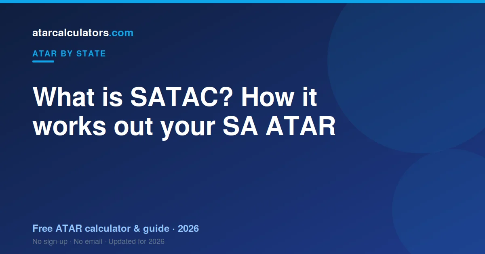

SATAC stands for the South Australian Tertiary Admissions Centre. It calculates the ATAR and runs university admissions for SA, and also for the Northern Territory. SATAC scales your SACE scores, adds your best three plus a flexible option into an aggregate, and ranks that into an ATAR. The SACE Board runs the SACE itself, so the two bodies do different jobs.
Key takeaways
- SATAC is the body that runs the SA ATAR and uni admissions.
- It calculates your ATAR from your scaled SACE results.
- It also runs uni applications for SA, and for the NT.
- The SACE Board runs the SACE. SATAC handles scaling, ranking and admissions.
- You apply for university through SATAC, not each university separately.

What SATAC is
SATAC is the body that handles ATAR calculation and university admissions in South Australia. The letters stand for the South Australian Tertiary Admissions Centre.
SATAC also serves the Northern Territory, because the NT uses the same SACE-based system. So students in both SA and the NT apply through SATAC.
Think of SATAC as the bridge between your Year 12 results and university. It takes your scores, turns them into a rank, and passes your application to the universities.
What SATAC actually does
SATAC has two main jobs. The first is working out your ATAR. The second is managing your university application.
- It scales your SACE Stage 2 subject scores.
- It adds your best three plus a flexible option into an aggregate.
- It ranks that aggregate into an ATAR between 0.00 and 99.95.
- It processes applications and sends offers on behalf of universities.
So SATAC does not teach you or set your exams. It takes your results and does the ranking and admissions work that follows.
SATAC vs the SACE Board: who does what?
This is the part that confuses students most. SA has two bodies, and they do different things.
The SACE Board runs the SACE. It sets the subjects, runs the exams, and reports your subject results. SATAC then takes those results and works out your ATAR.
A simple way to remember it: the SACE Board gives you your marks, SATAC gives you your rank. See our SA ATAR guide for how the two connect step by step.
How SATAC scales your scores
SATAC scales each subject so that no subject is unfairly easier or harder for your ATAR. Scaling adjusts for how strong each subject’s group was.
A subject full of high achievers tends to scale up. A subject with a weaker group can scale down. This keeps things fair across very different subjects.
It is about the group, not just you. You can read more in our best scaling subjects guide.
How SATAC builds your aggregate
Once your scores are scaled, SATAC builds your university aggregate. It takes your best three scaled scores and adds a flexible option.
The aggregate runs up to 90. A higher aggregate means a higher ATAR. SATAC then uses a conversion each year to turn your aggregate into your ATAR, where 90 maps to 99.95.
How SATAC handles applications
You do not apply to each SA university separately. You apply once, through SATAC, and list your course preferences in order.
SATAC then matches your ATAR and any prerequisites to your preferences. It sends offers in rounds on behalf of the universities. This is why keeping your preference order sensible matters so much.
Key dates with SATAC
There are a few key moments in the SATAC year. Applications open mid-year, well before results. ATARs are released in mid-to-late December. University offers follow in rounds from December into January.
Missing a preference deadline can cost you, so note the dates early. Our SA release date guide has the timing, and you should confirm the exact dates on the SATAC website.
Common questions
What does SATAC stand for?
SATAC stands for the South Australian Tertiary Admissions Centre. It calculates the ATAR and manages university admissions for SA, and also for the Northern Territory.
What is the difference between SATAC and the SACE Board?
The SACE Board runs the SACE, setting subjects, running exams and reporting your results. SATAC then scales those results, works out your ATAR, and handles university applications. The SACE Board gives your marks, SATAC gives your rank.
Does SATAC calculate my ATAR?
Yes. SATAC scales your SACE scores and adds your best three plus a flexible option into an aggregate. It then ranks that aggregate into an ATAR between 0.00 and 99.95. An aggregate of 90 maps to the top ATAR of 99.95.
Do I apply to SA universities through SATAC?
Yes. You apply once through SATAC and list your course preferences in order. SATAC then sends offers in rounds on behalf of the universities, so you do not apply to each one separately.
Does SATAC serve the Northern Territory too?
Yes. The NT uses the same SACE-based system. So NT students also apply through SATAC. Their ATAR is worked out the same way as for SA students.
Does SATAC set my exams?
No. The SACE Board sets and runs the exams and reports your results. SATAC takes those results and does the scaling, ranking and admissions work that follows.
When does SATAC release ATARs?
SATAC releases SA ATARs in mid-to-late December each year, through your application account. University offers then follow in rounds from December into January. Confirm the exact date on the SATAC website.